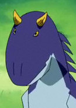
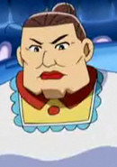

Seiko Tamura is a voice actress. Her notable role is Ace from Dinosaur King.
- Gender: Female
- Birthday: September 25
- Birthplace: Tokyo, Japan
| |
Seiko Tamura is a voice actress. Her notable role is Ace from Dinosaur King.
|
|
|---|
|  | Ace |
|
Ace is Rex Owen's faithful dinosaur partner. He is a Carnotaurus. |
|  | Helga |
|